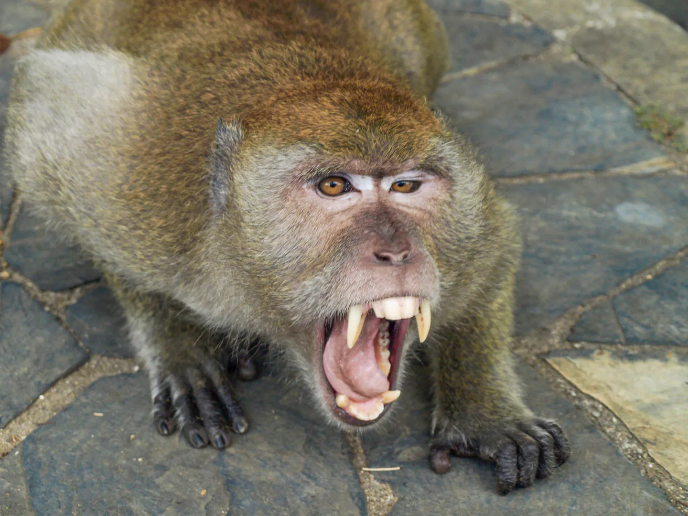

Aligator

Aligator to duży, drapieżny gad z rodziny aligatorowatych, występujący głównie w Ameryce Północnej i Chinach. Ma masywną, szeroką paszczę, silne szczęki i ciemnozieloną skórę pokrytą łuskami. Jest doskonałym pływakiem, spędza dużo czasu w wodzie, polując na ryby, ptaki i ssaki. Może osiągać nawet 4 do 5 metrów długości. Aligatory są znane ze swojej potężnej siły ugryzienia, ale na ogół unikają kontaktu z ludźmi.

Budowa zewnętrzna Należą tu zwierzęta bardzo rozmaitej wielkości, od pigmejki karłowatej (Cebuella (Callithrix) pygmaea), mniejszej od wiewiórki pospolitej, do goryla, większego od człowieka. Gatunki żyjące głównie na drzewach mają ciała wysmukłe i zgrabne, inne, naziemne lub naskalne, są krępe i masywne.
Mrówkojad

Zamieszkuje dżungle deszczowe, lasy mieszane, trawiaste równiny i stepy. Żyją samotnie, łączą się w pary tylko w okresie godów. Jeden osobnik, zależnie od ilości dostępnego pożywienia zajmuje obszar od 1 km² do 2,5 km². Odżywia się głównie żyjącymi w ziemi gatunkami mrówek. Termity lub mrówki wędrowne zjada bardzo rzadko. Wyszukuje mrowiska korzystając ze znakomitego węchu, następnie rozgrzebuje część mrowiska i za pomocą długiego, lepkiego języka wyciąga mrówki z wnętrza mrowiska. Nigdy nie niszczy całego mrowiska. Ponadto zjada również larwy owadów, owoce oraz ptasie jaja. W porze suchej mrówkojady najczęściej żywią się termitami, natomiast w deszczowej mrówkami. Mrówkojady tworzą pary tylko na czas godów. Ciąża trwa około 180 dni. Młode po urodzeniu samodzielnie wspina się na grzbiet matki, sierść noworodka ma taką samą strukturę i barwę jak matki, dzięki czemu jest słabo widoczne dla drapieżników. Młode jest karmione mlekiem matki przez 6 miesięcy.